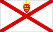
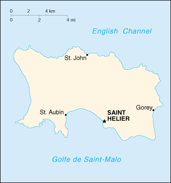

{kind=link}


| Jersey |
 |
|
|  | |
| Introduction |
Background: The island of Jersey and the other Channel Islands represent the last remnants of the medieval Dukedom of Normandy that held sway in both France and England. These islands were the only British soil occupied by German troops in World War II.
| Geography |
Location: Western Europe, island in the English Channel, northwest of France
Geographic coordinates: 49 15 N, 2 10 W
Map references: Europe
Area:
total:
116 sq km
land:
116 sq km
water:
0 sq km
Area - comparative: about 0.7 times the size of Washington, DC
Land boundaries: 0 km
Coastline: 70 km
Maritime claims:
exclusive fishing zone:
12 nm
territorial sea:
3 nm
Climate: temperate; mild winters and cool summers
Terrain: gently rolling plain with low, rugged hills along north coast
Elevation extremes:
lowest point:
Atlantic Ocean 0 m
highest point:
unnamed location 143 m
Natural resources: arable land
Land use:
arable land:
66%
permanent crops:
0%
permanent pastures:
0%
forests and woodland:
0%
other:
34%
Irrigated land: NA sq km
Natural hazards: NA
Environment - current issues: NA
Geography - note: largest and southernmost of Channel Islands; about 30% of population concentrated in Saint Helier
| People |
Population: 88,915 (July 2000 est.)
Age structure:
0-14 years:
18% (male 8,140; female 7,563)
15-64 years:
68% (male 30,036; female 30,329)
65 years and over:
14% (male 5,454; female 7,393) (2000 est.)
Population growth rate: 0.52% (2000 est.)
Birth rate: 11.65 births/1,000 population (2000 est.)
Death rate: 9.26 deaths/1,000 population (2000 est.)
Net migration rate: 2.81 migrant(s)/1,000 population (2000 est.)
Sex ratio:
at birth:
1.11 male(s)/female
under 15 years:
1.08 male(s)/female
15-64 years:
0.99 male(s)/female
65 years and over:
0.74 male(s)/female
total population:
0.96 male(s)/female (2000 est.)
Infant mortality rate: 5.71 deaths/1,000 live births (2000 est.)
Life expectancy at birth:
total population:
78.48 years
male:
76.07 years
female:
81.07 years (2000 est.)
Total fertility rate: 1.56 children born/woman (2000 est.)
Nationality:
noun:
Channel Islander(s)
adjective:
Channel Islander
Ethnic groups: UK and Norman-French descent
Religions: Anglican, Roman Catholic, Baptist, Congregational New Church, Methodist, Presbyterian
Languages: English (official), French (official), Norman-French dialect spoken in country districts
Literacy:
definition:
NA
total:
NA
male:
NA
female:
NA
| Government |
Country name:
conventional long form:
Bailiwick of Jersey
conventional short form:
Jersey
Data code: JE
Dependency status: British crown dependency
Government type: NA
Capital: Saint Helier
Administrative divisions: none (British crown dependency)
Independence: none (British crown dependency)
National holiday: Liberation Day, 9 May (1945)
Constitution: unwritten; partly statutes, partly common law and practice
Legal system: English law and local statute
Suffrage: NA years of age; universal adult
Executive branch:
chief of state:
Queen ELIZABETH II (since 6 February 1952)
head of government:
Lieutenant Governor and Commander in Chief Sir Michael WILKES (since NA 1995) and Bailiff Philip Martin BAILHACHE (since NA 1995)
cabinet:
committees appointed by the Assembly of the States
elections:
none; the monarch is hereditary; lieutenant governor and bailiff appointed by the monarch
Legislative branch:
unicameral Assembly of the States (55 voting members - 12 senators, 12 constables or heads of parishes, 29 deputies; all elected for six-year terms, half elected every third year; the bailiff and the deputy bailiff; and 3 non-voting members - the Dean of Jersey, the Attorney General and the Solicitor General all appointed by the monarch
elections:
last held NA (next to be held NA)
election results:
percent of vote - NA; seats - independents 52
Judicial branch: Royal Court, judges elected by an electoral college and the bailiff
Political parties and leaders: none; all independents
Diplomatic representation in the US: none (British crown dependency)
Diplomatic representation from the US: none (British crown dependency)
Flag description: white with a diagonal red cross extending to the corners of the flag and in the upper quadrant, surmounted by a yellow crown, a red shield holding the three lions of England in yellow
| Economy |
Economy - overview: The economy is based largely on international financial services, agriculture, and tourism. Potatoes, cauliflower, tomatoes, and especially flowers are important export crops, shipped mostly to the UK. The Jersey breed of dairy cattle is known worldwide and represents an important export income earner. Milk products go to the UK and other EU countries. In 1996 the finance sector accounted for about 60% of the island's output. Tourism, another mainstay of the economy, accounts for 24% of GDP. In recent years, the government has encouraged light industry to locate in Jersey, with the result that an electronics industry has developed alongside the traditional manufacturing of knitwear. All raw material and energy requirements are imported, as well as a large share of Jersey's food needs. Light taxes and death duties make the island a popular tax haven.
GDP: purchasing power parity - $2.2 billion (1999 est.)
GDP - real growth rate: NA%
GDP - per capita: purchasing power parity - $24,800 (1999 est.)
GDP - composition by sector:
agriculture:
5%
industry:
2%
services:
93% (1996)
Population below poverty line: NA%
Household income or consumption by percentage share:
lowest 10%:
NA%
highest 10%:
NA%
Inflation rate (consumer prices): 4.7% (1998)
Labor force: 57,050 (1996)
Unemployment rate: 0.7% (1998 est.)
Budget:
revenues:
$666.9 million
expenditures:
$618.5 million, including capital expenditures of $128.4 million (1996 est.)
Industries: tourism, banking and finance, dairy
Industrial production growth rate: NA%
Electricity - production: 266 million kWh
Electricity - production by source:
fossil fuel:
100%
hydro:
0%
nuclear:
0%
other:
0%
Electricity - consumption: 467 million kWh (1995)
Electricity - exports: 0 kWh (1998)
Electricity - imports: 201 million kWh (from France) (1995)
Agriculture - products: potatoes, cauliflower, tomatoes; beef, dairy products
Exports: $NA
Exports - commodities: light industrial and electrical goods, foodstuffs, textiles
Exports - partners: UK
Imports: $NA
Imports - commodities: machinery and transport equipment, manufactured goods, foodstuffs, mineral fuels, chemicals
Imports - partners: UK
Debt - external: none
Economic aid - recipient: none
Currency: 1 Jersey pound = 100 pence
Exchange rates: Jersey pounds per US$1 - 0.6092 (January 2000), 0.6180 (1999), 0.6037 (1998), 0.6106 (1997), 0.6403 (1996), 0.6335 (1995); the Jersey pound is at par with the British pound
Fiscal year: 1 April - 31 March
| Communications |
Telephones - main lines in use: NA
Telephones - mobile cellular: NA
Telephone system:
domestic:
NA
international:
3 submarine cables
Radio broadcast stations: AM NA, FM 1, shortwave 0 (1998)
Radios: NA
Television broadcast stations: 1 (1997)
Televisions: NA
Internet Service Providers (ISPs): NA
| Transportation |
Railways: 0 km
Highways:
total:
577 km (1995)
paved:
NA km
unpaved:
NA km
Ports and harbors: Gorey, Saint Aubin, Saint Helier
Merchant marine: none (1999 est.)
Airports: 1 (1999 est.)
Airports - with paved runways:
total:
1
1,524 to 2,437 m:
1 (1999 est.)
| Military |
Military - note: defense is the responsibility of the UK
| Transnational Issues |
Disputes - international: none